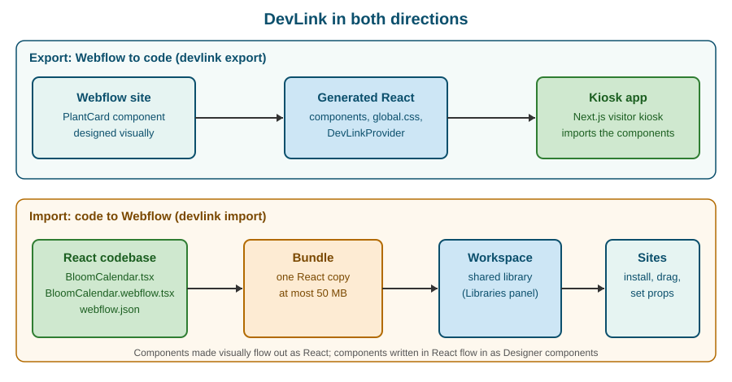

Code Components
|
This content was generated with the assistance of AI and should be verified against the official documentation before being relied on in production. |
This page describes Webflow code components as they were on 2026-10-28, the date on which its facts were checked against
the code components section of developers.webflow.com: the introduction, installation, defining code components,
component architecture, styling, frameworks and libraries, bundling and import, the prop type and hook references, the
import and generate quick starts, and the CLI command reference. A code component is a React component that is
written in a code repository, declared to Webflow with a small definition file, uploaded to a Workspace as a shared
library and then dragged onto the canvas like any other component, with its props editable in the Designer. The
pinned versions are @webflow/react 2.8.0, @webflow/data-types 2.8.0 and @webflow/webflow-cli 2.15.0, which
requires Node.js 22.13.0 or later. Plans are named by tier only, never by price.
The running example is Fernbrook Gardens, a fictitious botanical garden. Its developer writes BloomCalendar, a React
component that shows the months in which a plant flowers, and imports it into the garden’s Webflow site so that the
designers can place it on the Plants template page and configure it without touching code. The same developer also
uses DevLink in the other direction, exporting the PlantCard component to a Next.js kiosk; that direction is covered
in DevLink Export, and the two are contrasted in DevLink export and Designer components.
The two directions of DevLink
Webflow uses the name DevLink for the bridge between Webflow and a code repository, and the bridge runs in two
directions. Components that were designed visually in Webflow are exported to a React codebase with
webflow devlink export. Components that were written in React in a codebase are imported into a Workspace with
webflow devlink import. A code component is the second case: the introduction of the code components documentation
describes them as React components enhanced for use in Webflow sites and external sites, and says they can be kept in
sync between Webflow and non-Webflow sites with DevLink.

Source: Code components: Introduction
The documentation distinguishes three kinds of code component, which this page covers in this order:
-
Imported components, written in an external repository and uploaded with the CLI. These are sometimes called "DevLink code components". Most of this page is about them.
-
Components created in the Designer, optionally exported as React components for use outside Webflow (the export direction, described elsewhere).
-
Components generated by AI from a prompt in the Designer, covered in AI-generated code components.
What a code component is
A code component is a standard React component with three additions:
-
A definition file, named
ComponentName.webflow.tsx, that callsdeclareComponentto give the component a name, an optional description and group, and a map of props that become editable fields in the Designer. -
A library, which is the set of definition files matched by the glob in the
librarysection ofwebflow.json. The library is bundled and uploaded as one unit. -
Installation on a site: a Workspace member opens the Libraries panel on a site, installs the library, and the components appear in the Components panel.
The documentation summarises the workflow in five steps: build React components in the codebase, declare the Webflow component and define its prop types, bundle and publish with DevLink, install the library on sites in the Workspace, and drag the components onto the canvas to configure props and slots in the right panel. Because the component is real React, it can use hooks, state, effects and context inside its own tree, fetch data from public APIs and render anything a React component can render. Because it is imported through a library, the same component can be installed on several sites and updated in one place.
The key design consequence is that a code component is opaque to the Designer. A visual Webflow component is made of elements whose classes and styles a designer can edit. A code component is a single box whose inside is controlled by code; the designer controls only what the definition file exposes through props, slots and variants, and the surrounding layout. Everything on this page follows from that: props are the contract between the developer and the designer, and styling crosses the boundary only through the explicit routes described in Styling inside the Shadow DOM.
Source: Code components: Introduction
Prerequisites and plans
The import quick start lists the prerequisites:
-
a Webflow plan: either a Workspace on a Freelancer, Core, Growth, Agency or Enterprise plan, or a site on a CMS, Business or Enterprise Site plan (the CMS and Business Site plans were merged into Premium in May 2026; see Plans, Workspaces, Seats and Roles for the mapping)
-
Node.js 22.13.0 or later with npm
-
basic knowledge of React and TypeScript
-
a test site where the component can be tried
Generating a component with AI has its own requirement, described in AI-generated code components. Uploading a library needs a Workspace API token, and the person who creates the token must be a Workspace Admin (see Authentication).
Setting up the project
Installing the packages
Install the three packages as development dependencies in the repository that holds the React components:
npm i --save-dev @webflow/webflow-cli @webflow/data-types @webflow/reactSource: Code components: Installation
The roles of the packages are:
| Package | Role |
|---|---|
|
The CLI that bundles and uploads the library ( |
|
TypeScript definitions for Webflow props, including the |
|
React utilities for code components: |
When the project already has a global CLI installation, run the commands with npx so that the project-local version is
the one used; the frameworks and libraries guide lists this as the first thing to check when sharing fails.
React versions
The bundle must contain exactly one copy of React, and the versions are checked strictly:
-
with React 18,
reactandreact-dommust have the same major version -
from React 19,
reactandreact-dommust be exactly the same version, for example both19.1.0 -
the CLI resolves every
reactandreact-domimport from the folder that containswebflow.jsonand ignores the copies that dependencies install for themselves, so install both packages in that folder or let the package manager hoist them there -
the build fails when it finds several copies or mismatched versions
The consequences of getting this wrong are described in One React copy.
Source: Code components: Installation
The webflow.json library section
webflow.json sits in the project root. Its library section tells the CLI what to bundle:
{
"library": {
"name": "Fernbrook Components",
"components": ["./src/**/*.webflow.@(js|jsx|mjs|ts|tsx)"],
"globals": "./src/globals.webflow.ts",
"ssrDefault": true
}
}Source: Code components: Installation
The fields are:
| Field | Description | Required |
|---|---|---|
|
The library name as it appears in Webflow |
Yes |
|
A glob pattern that matches the component definition files |
Yes |
|
Path to a custom webpack configuration file |
No |
|
Path to a Component Decorators file, used for global styles and decorators |
No |
|
Default server-side rendering setting for components that do not set |
No |
The same webflow.json also carries the configuration of other CLI features (see
Webflow CLI); the library section is the part that code components read.
Authentication
When webflow devlink import runs for the first time, the CLI prompts the user to authenticate and saves the token to
the project’s .env file. To publish to a different Workspace, or in an environment without a browser, pass a Workspace
API token explicitly:
webflow devlink import --api-token REPLACE_WITH_WORKSPACE_API_TOKENSource: Code components: Installation
A Workspace API token is generated by a Workspace Admin: open the Workspace, go to Apps & Integrations, click Manage
in the left sidebar, scroll to Workspace API Access, click Generate API Token and copy it. The CLI reads the token
from WEBFLOW_WORKSPACE_API_TOKEN in .env when the flag is absent. Keep .env out of version control by adding it to
.gitignore; the token grants access to the Workspace, so it must never be committed or pasted into a definition file.
Defining a component with declareComponent
The React component
BloomCalendar shows twelve month cells and highlights those in which a plant flowers. It is plain React and knows nothing about Webflow, which is the point: the same file can be unit-tested and reused elsewhere. The only convention is that every editable value arrives as a prop.
// src/components/BloomCalendar.tsx
import React from "react";
import "./BloomCalendar.css";
const MONTHS = ["Jan", "Feb", "Mar", "Apr", "May", "Jun", "Jul", "Aug", "Sep", "Oct", "Nov", "Dec"];
export interface BloomCalendarProps {
heading?: string;
bloomMonths?: string;
tone?: "leaf" | "petal";
showLegend?: boolean;
footer?: React.ReactNode;
}
export function BloomCalendar({
heading = "Blooms in",
bloomMonths = "",
tone = "leaf",
showLegend = true,
footer,
}: BloomCalendarProps) {
const active = new Set(
bloomMonths
.split(",")
.map((part) => part.trim().toLowerCase().slice(0, 3))
.filter(Boolean),
);
return (
<section className={`bloom bloom--${tone}`}>
<h3 className="bloom__heading">{heading}</h3>
<ol className="bloom__grid">
{MONTHS.map((month) => (
<li
key={month}
className={active.has(month.toLowerCase()) ? "bloom__cell is-active" : "bloom__cell"}
>
{month}
</li>
))}
</ol>
{showLegend && <p className="bloom__legend">Highlighted months show when the plant flowers.</p>}
{footer}
</section>
);
}The definition file
The definition file imports the React component, the props helper from @webflow/data-types and declareComponent
from @webflow/react, and exports the result of calling declareComponent as its default export:
// src/components/BloomCalendar.webflow.tsx
import { declareComponent } from "@webflow/react";
import { props } from "@webflow/data-types";
import { BloomCalendar } from "./BloomCalendar";
export default declareComponent(BloomCalendar, {
name: "Bloom Calendar",
description: "Twelve months with the flowering months of a plant highlighted",
group: "Fernbrook",
props: {
heading: props.Text({ name: "Heading", defaultValue: "Blooms in", group: "Content" }),
bloomMonths: props.Text({ name: "Bloom months", defaultValue: "Apr, May, Jun", group: "Content" }),
tone: props.Variant({ name: "Tone", options: ["leaf", "petal"], defaultValue: "leaf", group: "Style" }),
showLegend: props.Visibility({ name: "Legend", defaultValue: true, group: "Style" }),
footer: props.Slot({ name: "Footer", group: "Content" }),
},
options: { applyTagSelectors: false },
});declareComponent takes two arguments: the React component to expose, and a configuration object with these fields:
| Field | Required | Purpose |
|---|---|---|
|
Yes |
The name designers see in the Components panel |
|
No |
Explains what the component is for |
|
No |
Groups the component in the Components panel |
|
No |
Maps each editable React prop to a prop definition made with a helper such as |
|
No |
An array of decorators that wrap the component (see Decorators and global styles) |
|
No |
Advanced settings: |
Each prop definition carries metadata that the Designer shows: at least a name, usually a defaultValue, and often a
group that collects related props under one heading in the properties panel. The key of the entry in props is the
name of the React prop that receives the value, so bloomMonths above arrives in BloomCalendar as bloomMonths.
File naming and component identity
-
The extension is
.webflow.tsxor.webflow.ts, and the conventional pattern isComponentName.webflow.tsxnext toComponentName.tsx. The pattern that the CLI scans for is the glob inlibrary.components, so it can be changed. -
The documentation states that file names are the unique identifier of a code component. Renaming a definition file creates a new component and removes the old one, which breaks every instance that designers already placed in their projects. Rename files deliberately, and prefer changing the
nameshown in the Designer, which is only a label. -
The bundler rejects prop names that start with
__wf_; that prefix is reserved for Webflow.
Prop types
Props are the contract between the developer and the designer. The prop types reference lists eleven types. The ones that Fernbrook Gardens uses are described here with the settings and return values that the reference documents.
| Prop type | What the designer sees | What the React component receives |
|---|---|---|
|
A single-line text field |
A string; the default is an empty string |
Rich Text |
A multi-line field with formatting |
Formatted HTML content as a |
Text Node |
Text that is edited directly on the canvas |
Single- and multi-line text |
|
A URL field with validation |
An object with |
Image |
An image chooser |
An object with |
Number |
A numeric field with validation |
A plain |
Boolean |
A true or false toggle |
A boolean |
|
A dropdown of predefined options |
The selected option |
|
A show or hide control |
A boolean that controls whether part of the component renders |
|
A content area that accepts other components |
A |
ID |
The HTML element id |
A string |
Source: Code components: Prop types
Text, Variant and Visibility
props.Text takes name, defaultValue and group. props.Variant takes name, options and group.
props.Visibility takes name, defaultValue and group:
text: props.Text({ name: "Button text", defaultValue: "Hello World!" }),
variant: props.Variant({ name: "Style", options: ["primary", "secondary"] }),
buttonVisible: props.Visibility({ group: "Button", name: "Visibility", defaultValue: true }),Source: Code components: Prop types
A Variant is the right choice whenever the component has a small closed set of looks, as the tone prop of
BloomCalendar does. Visibility is the right choice for optional parts: unlike a Boolean it is presented in the
Designer as a show or hide control, which matches how designers think about optional content.
Link
props.Link returns an object, not a string. The reference documents href as a string, target as "_self",
"_blank" or another string, and preload as "prerender", "prefetch", "none" or another string, the last two
being optional. When the React component expects href and target as separate props, wrap it in a small component
that destructures the object. For BloomCalendar the Plants template page could add a link to the planting guide:
// src/components/GuideLink.webflow.tsx
import { declareComponent } from "@webflow/react";
import { props } from "@webflow/data-types";
import { GuideLink } from "./GuideLink";
export default declareComponent(GuideLink, {
name: "Guide Link",
props: {
link: props.Link({ name: "Link" }),
},
});// src/components/GuideLink.tsx
import React from "react";
interface GuideLinkProps {
link?: { href: string; target?: string };
}
export function GuideLink({ link }: GuideLinkProps) {
if (!link) return null;
return (
<a href={link.href} target={link.target} rel={link.target === "_blank" ? "noopener" : undefined}>
Read the planting guide
</a>
);
}Source: Code components: Prop types
Image
props.Image takes name, an optional group and an optional tooltip. The component receives an object with src
and an optional alt, so render image.alt with a fallback of the empty string to keep decorative images out of the
accessibility tree:
image: props.Image({ name: "Hero Image", group: "Content" }),export function PlantHero({ image }: { image?: { src: string; alt?: string } }) {
if (!image) return null;
return <img src={image.src} alt={image.alt || ""} />;
}Source: Code components: Image prop
Number
props.Number takes name, group, tooltip, defaultValue, min, max and decimals (the maximum number of
decimal places). The component receives a plain number, typed as optional so that the undefined case is handled:
count: props.Number({
name: "Item Count",
group: "Settings",
defaultValue: 5,
min: 1,
max: 100,
decimals: 0,
}),Source: Code components: Number prop
Rich Text
props.RichText takes name (required), group, tooltip and defaultValue. The prop supplies formatted HTML to the
component as a ReactNode, which the component renders inside its own wrapper. The documentation advises meaningful
defaults so the component renders when first added to the canvas, graceful handling of missing content, thought about
how the content is styled inside the component, and testing with varied HTML structures. A Rich Text prop always
counts as filled for isEmptySlot (see Slots and isEmptySlot).
Source: Code components: Rich Text prop
Slots and isEmptySlot
A slot is a content area that designers fill with other components. props.Slot takes name (required), an
optional group and an optional tooltip; props.Children is an alias. The slot arrives in the React component as a
single ReactNode through the children prop:
export default declareComponent(MyComponent, {
name: "MyComponent",
description: "A component with a Slot property",
props: {
children: props.Slot({ name: "Content", group: "Content" }),
},
});Source: Code components: Slot prop
BloomCalendar above binds its slot to a prop called footer so that a designer can drop a link or a note below the
grid. To show a hint when nothing was dropped, import isEmptySlot from @webflow/react. Its signature is
isEmptySlot(node: React.ReactNode): boolean; it returns true when the slot is empty, and also when node is null
or undefined, which covers rendering outside Webflow, for example in local development or unit tests:
import React from "react";
import { isEmptySlot } from "@webflow/react";
export function BloomCard({ children }: { children?: React.ReactNode }) {
return (
<article className="bloom-card">
{children}
{isEmptySlot(children) && <p className="bloom-card__hint">Drop content here</p>}
</article>
);
}Source: Code components: isEmptySlot
Three rules from the slot and isEmptySlot pages avoid the usual mistakes:
-
render fallback content next to the slot, not instead of it: replacing the slot removes the Designer drop target, and the designer can no longer fill it
-
a slot whose children render nothing, such as an empty fragment or a child hidden by a visibility binding, still counts as filled
-
only Slot props report emptiness; Rich Text and Text Node props always report as filled
Slots cross the Shadow DOM boundary in a specific way, described in No shared context between components.
Reading the Webflow environment with useWebflowContext
A component that behaves the same everywhere is easy to write, but a component that lives inside a visual editor often
should not. useWebflowContext() returns information about the Webflow environment so that the component can adapt to its
mode and locale. It takes no arguments and returns an object with three properties:
| Property | Type | Description |
|---|---|---|
|
|
The current Webflow mode: |
|
|
Whether the component is in an interactive state |
|
|
The ISO string of the current locale, or |
The documentation lists three uses: adapting behaviour to the mode (placeholders or expanded states for designers), controlling interactivity when the component is not interactive, and localizing content from the locale. The Fernbrook Gardens site publishes in Spanish and German besides the default language, so BloomCalendar uses the hook for its legend and for the month labels:
import React from "react";
import { useWebflowContext } from "@webflow/react";
const LEGEND: Record<string, string> = {
es: "Los meses resaltados indican cuando florece la planta.",
de: "Die hervorgehobenen Monate zeigen die Bluetezeit der Pflanze.",
};
export function BloomLegend() {
const { locale, mode } = useWebflowContext();
const language = (locale ?? "en").slice(0, 2);
const text = LEGEND[language] ?? "Highlighted months show when the plant flowers.";
return (
<p className="bloom__legend" data-mode={mode}>
{text}
</p>
);
}The documentation’s own examples use the hook for an accordion that opens by default when interactive is false, so
that designers see all the content on the canvas, and for a component that switches between Spanish, French and English
text. Localization of the site itself is described in Localization; the hook only
tells the component which locale is active.
Architecture: isolation, SSR and shared state
Each component is its own React app in a Shadow DOM
The architecture page makes the central design fact explicit: each code component runs as its own React application, inside its own Shadow DOM container, with its own React root. Two consequences follow, and both surprise developers who are used to a single React tree:
-
styles do not leak in or out: the component’s CSS cannot affect the page, and the page’s CSS and classes cannot reach the component (see Styling inside the Shadow DOM)
-
components cannot share React Context or state through React, because their roots are separate
No shared context between components
The lack of shared context includes the relationship between a parent component and a child that a designer placed in its slot. A provider component that wraps slot content does not make its context available to that content, because the slot content renders in a different React root. The documented alternatives for sharing state are:
| Mechanism | Use |
|---|---|
URL parameters |
Shareable state such as filters or pagination, read and written with |
Browser storage |
|
Nano Stores |
A lightweight library with shared stores; components subscribe to a store and re-render when it changes |
Custom events |
One component dispatches a browser event and others listen for it |
For Fernbrook Gardens, a zone filter component and a plant list component on the same page can coordinate through a custom event, because it needs no library and works across roots:
// ZoneFilter.tsx: announce the selected hardiness zone
export function announceZone(zone: string) {
window.dispatchEvent(new CustomEvent("fernbrook:zone", { detail: { zone } }));
}
// PlantList.tsx: react to the announcement
import { useEffect, useState } from "react";
export function usePlantZone() {
const [zone, setZone] = useState("all");
useEffect(() => {
const onZone = (event: Event) => setZone((event as CustomEvent<{ zone: string }>).detail.zone);
window.addEventListener("fernbrook:zone", onZone);
return () => window.removeEventListener("fernbrook:zone", onZone);
}, []);
return zone;
}Server-side rendering
SSR is on by default. The server produces the component’s initial HTML, and Webflow hydrates the component in the browser afterwards so that it becomes interactive. SSR is controlled at two levels:
-
per component, with
options: { ssr: false }in the definition file -
for the whole library, with
library.ssrDefaultinwebflow.json
A component’s own ssr setting overrides the library default. The documentation recommends turning SSR off for
components that use browser-only APIs, show personalized or dynamic content, are heavy or highly interactive, or render
different output on the server and in the browser. React Server Components are not supported; every component must be a
standard React component.
export default declareComponent(VisitorWeather, {
name: "Visitor Weather",
group: "Fernbrook",
options: { ssr: false },
});A component that reads window or localStorage during render breaks server rendering, and because SSR is the default
it fails on the first publish rather than in the editor. Either guard the access inside useEffect, which runs only in
the browser, or set ssr: false.
Fetching data
Fetch data on the client in a useEffect hook after the component mounts. Three constraints from the architecture page
apply:
-
use only public APIs, because all the component’s code is visible to visitors
-
the API must allow CORS requests from the Webflow site’s origin
-
.envfiles are not supported in a code component; pass configuration values as props instead
A component therefore cannot hold a secret. The Data API token of the garden’s synchronisation script must never be placed in a code component; that work belongs in a server-side process (see Data API: CMS) or in a hosted app (see Webflow Cloud).
Styling inside the Shadow DOM
The rule
Component styles are isolated from the page. To use site-level styles, the component must connect to them explicitly through one of three routes. Site classes never work inside the Shadow DOM.
| Feature | Works | How |
|---|---|---|
Site variables |
Yes |
|
Inherited properties |
Yes |
|
Tag selectors |
Yes |
Enable with |
Site classes |
No |
Use component-specific classes |
Importing the component’s own CSS
Import the stylesheet into the component or definition file, as BloomCalendar.tsx does with its
BloomCalendar.css. Class names in a component’s stylesheet are private to its Shadow DOM, so plain names cannot
collide with site classes. A BEM-style naming still helps readability:
/* src/components/BloomCalendar.css */
.bloom {
font-family: inherit;
color: var(--text-primary, #1d2b21);
background: var(--background-primary, #ffffff);
border-radius: var(--radius-medium, 8px);
padding: var(--space-medium, 1rem);
}
.bloom__grid {
display: grid;
grid-template-columns: repeat(4, 1fr);
gap: var(--space-small, 0.5rem);
list-style: none;
margin: 0;
padding: 0;
}
.bloom__cell {
padding: 0.5rem;
text-align: center;
border-radius: 4px;
background: var(--background-secondary, #eef3ee);
}
.bloom__cell.is-active { background: var(--brand-leaf, #2f7d32); color: #ffffff; }
.bloom--petal .bloom__cell.is-active { background: var(--brand-petal, #c2185b); }Site variables
A component adapts to the site’s design system by referencing the site’s CSS variables with a fallback. To get the exact
variable name, open the three-dot menu next to a variable in the Variables panel and click Copy CSS. The fallback value
is used when the variable is not available, for example when the component runs in local development or on a site that
lacks the variable. In the example above --brand-leaf stands for a variable from the garden’s brand collection; because
variables change with the mode, the component follows the Day and Night modes of the site without extra code. Variables
and modes are described in Variables and Modes.
Inherited properties
Properties set to inherit pass through the Shadow DOM boundary, so the component picks up the styles of its parent
element. If the component sits inside a div with font-family: sans-serif, then font-family: inherit in the
component’s stylesheet makes it use that font. Inheritance is the route for typography: set the font once on the page and
let every code component follow it.
Tag selectors with applyTagSelectors
Tag selectors from the site’s CSS, such as h1, p or button, can be applied to the component automatically. Enable
them in the definition file:
export default declareComponent(Button, {
name: "Button",
options: {
applyTagSelectors: true,
},
});Use it for components that render bare tags and should look like the rest of the page without a class. Leave it at the
default false when the component brings its own complete styling, as BloomCalendar does.
Decorators and global styles
Styles shared by every component of the library go in a Component Decorators file, referenced from webflow.json under
library.globals:
// src/globals.webflow.ts
import "./globals.css";/* src/globals.css */
:root {
--primary-color: #007bff;
--font-family: system-ui, sans-serif;
}Decorators are higher-order components that wrap a component with providers or other behaviour, such as themes,
internationalization, feature flags or CSS-in-JS setup. Pass them in the decorators array of one definition, or export a
decorators array from the global decorators file to apply them to every component.
CSS frameworks and component libraries
Some CSS tooling needs extra configuration to work inside a Shadow DOM. The frameworks and libraries guide documents:
| Tool | Setup |
|---|---|
Tailwind CSS |
Install |
styled-components |
Install |
Emotion |
Install |
Material UI |
Uses Emotion, so install |
shadcn/ui |
Built on Tailwind, so complete the Tailwind setup first, then add an |
Sass and Less |
Install the preprocessor and its loader as development dependencies, add a rule for |
The CSS-in-JS decorators are the important point: those libraries inject styles into the document head by default, where a Shadow DOM cannot see them, so the decorator redirects the injection into the shadow root:
// src/globals.webflow.ts
import { emotionShadowDomDecorator } from "@webflow/emotion-utils";
export const decorators = [emotionShadowDomDecorator];Bundling and importing the library
The import command
webflow devlink import bundles the component files and uploads them to the Workspace as a shared library. The CLI
authenticates the Workspace (from the token in .env or through a browser prompt), bundles the library, asks which
components to share, and uploads it.
webflow devlink import
webflow devlink import --verbose
webflow devlink import --api-token REPLACE_WITH_WORKSPACE_API_TOKEN
webflow devlink import --no-inputThe flags documented for devlink import are:
| Flag | Description |
|---|---|
|
Path to the |
|
A Workspace API token; by default |
|
Avoids prompts and interactive behaviour, for CI/CD |
|
Shows more debugging information |
|
Bundles in development mode, with minification and source maps disabled |
|
Finishes compiling despite warnings or type errors |
|
Prints the final bundler configuration |
Source: Code components: CLI reference
Source: Webflow CLI: Command reference
webflow log prints the debug log of the last library import, which is the first thing to read when an import fails.
Neither devlink import nor devlink bundle has a --dry-run flag; to preview what an import will upload, run
devlink bundle first, which builds the same bundle locally and shares nothing.
Bundling locally
webflow devlink bundle creates the bundle in a local folder and does not touch Webflow:
webflow devlink bundle --public-path http://localhost:4000/--public-path is required and is the URL where the bundle will be served. The output goes to ./dist unless
--output-path overrides it, and --debug-bundler prints the final webpack configuration. Bundling without --force
fails on type errors, which is the behaviour a CI job wants.
The 50 MB limit
The maximum bundle size is 50 MB. The size depends on the dependencies and the bundled assets, not on the number of components, so one component that imports a charting library or embeds a large font can use most of the budget. Run the local bundle command to see the total size, and check it again after adding dependencies, images or fonts. Prefer loading large assets from a CDN at runtime over bundling them.
One React copy
Code components crash in the Designer, with React error 525 or an "Invalid hook call" message, when the bundle contains
more than one copy of React. The two common causes are a dependency that installs its own copy of react, and react
and react-dom at different versions. The build fails with a message that lists each copy and where it comes from. The fix
has three steps:
-
install
reactandreact-domin the folder that holds the manifest file, or make sure the package manager hoists them there -
use the same version of both
-
align the versions across the
package.jsonfiles, or pin one withoverrides(npm),resolutions(Yarn) orpnpm.overrides(pnpm), and reinstall
--force does not skip this check.
{
"overrides": {
"react": "19.1.0",
"react-dom": "19.1.0"
}
}Custom webpack configuration and debugging
A custom webpack file is optional and is referenced from library.bundleConfig. To make browser errors map to source
lines, build in development mode, which disables minification (the --dev flag does the same from the command line):
// webpack.webflow.js
module.exports = {
mode: "development",
};Remove the development mode before the production import, because an unminified bundle is larger and counts toward the 50 MB limit.
Continuous integration
The CLI exits with 0 on success and a non-zero code on failure, so a pipeline can stop on any failure. The
documentation recommends adding change detection in CI, so that the import runs only when components changed and a
careless run does not remove components by accident. A GitHub Actions job for the garden’s component repository:
name: Import Fernbrook components
on:
push:
branches: [main]
paths: ["src/components/**", "webflow.json"]
jobs:
import:
runs-on: ubuntu-latest
steps:
- uses: actions/checkout@v4
- uses: actions/setup-node@v4
with:
node-version: 22
- run: npm ci
- run: npx webflow devlink import --no-input
env:
WEBFLOW_WORKSPACE_API_TOKEN: ${{ secrets.WEBFLOW_WORKSPACE_API_TOKEN }}The job runs the project-local CLI through npx, as the frameworks guide advises, and reads the token from a repository
secret rather than from a committed .env. The CLI itself is described in Webflow CLI,
and pipelines in general in Testing, CI and DevOps.
Installing and using the library on a site
After the import, a library appears in the Workspace and each site installs it separately:
-
open a site in the Workspace and open the Libraries panel (press
L) -
find the library and click its Install icon
-
open the Components panel (press
Shift+C) and find the component under its group, here Fernbrook -
drag the component onto the page
-
edit its props in the Properties panel on the right
BloomCalendar is placed on the Plants template page and configured in the Properties panel: the Bloom months text field, the Tone variant, the Legend visibility control and the Footer slot. Shared libraries and how they reach sites are described in Shared Libraries.
Changing the props of a component is the risky operation after instances exist: removing or renaming a prop leaves existing instances with a value that nothing reads. Add new props with default values, and keep old ones until every site has been updated.
AI-generated code components
The third kind of code component is generated from a prompt by the Webflow AI Assistant in the Designer, with no repository at all. The steps are:
-
open the Components panel or press
Shift+A -
click New Component and then Generate with AI
-
describe the component in plain language in the Generate a code component with AI window and press Enter
-
wait for the AI Assistant to generate the code, preview it, and refine it by editing the code in the Edit code component window or by prompting again on the component’s canvas
Describe both the appearance and the behaviour. A prompt for the garden might read: "A twelve-month calendar for a plant, with the months from April to June highlighted in green, using the site’s brand colors and a legend underneath." Generated components use the site’s styles and variables by default, accept uploaded images and files as examples, and need a check after a manual edit followed by another prompt, because the assistant can overwrite manual changes.
The generate quick start lists requirements and limitations that decide when this route is appropriate:
-
publishing needs a CMS plan or higher, or a paid Workspace; accounts without those can generate components but cannot publish them
-
the Webflow AI Assistant must be used; other agents are not supported
-
AI can only be used on components created with AI, not on existing, imported or copied components
-
the component cannot be edited visually, only through the assistant or in the code
-
components cannot access CMS Collections
-
components cannot hold secrets or secure values, and all code is visible to visitors
-
only React is supported
-
components cannot be exported to an external codebase
An AI-generated component is therefore a prototype route for self-contained widgets such as a calculator or a diagram. A component that needs source control, tests, a CMS binding or reuse outside Webflow belongs in a repository. Credits consumed by the assistant are described in AI Features and Credits.
Code components, DevLink export and Designer components
Webflow now has three component mechanisms that the documentation presents together. They are easy to confuse, so the differences are:
| Aspect | Designer component | Exported component (DevLink export) | Code component (import) |
|---|---|---|---|
Authored in |
The Designer, from elements |
The Designer, then exported |
A React repository |
Direction |
None; stays in Webflow |
Webflow to code |
Code to Webflow |
Editable by designers |
Fully: elements, classes, props, slots, variants |
In Webflow only; the code copy is generated |
Only the props, slots and variants that the definition exposes |
Styling |
Site classes and variables |
Generated CSS with scopes |
Shadow DOM; variables, |
Typical use |
Headers, cards, banners |
Reusing marketing components in a Next.js or React app |
Interactive widgets with real logic |
Source: Code components: Introduction
Choose a Designer component whenever the content is layout and styling that designers should own, an exported component when the same visual component must also appear in a separate application, and a code component when the behaviour needs code. The Designer-side counterpart, with props, slots and variants, is described in Components: Props, Slots and Variants. Libraries of components shared between sites, whichever way they were made, are described in Shared Libraries.
Pitfalls
-
Two copies of React. The most common failure: a dependency with its own React, or
reactandreact-domat different versions. The Designer shows an "Invalid hook call" error and the build fails with the copies listed. See One React copy. -
Site classes do nothing. A designer adds a site class to the component’s wrapper and nothing changes, because the component’s contents are in a Shadow DOM. Style through variables, inherited properties or tag selectors, or expose a Variant prop.
-
Context across slots. A provider component does not reach the components placed in its slot, because every code component is its own React root. Share state through events, storage, URL parameters or a store.
-
Browser APIs during SSR. Reading
windowwhile rendering fails server rendering. Move the access intouseEffector setssr: false. -
Renaming a definition file. The file name is the component’s identity; renaming it removes the old component and breaks its instances.
-
Replacing the slot with a fallback. Rendering a placeholder instead of the slot removes the drop target. Render the placeholder beside the slot.
-
Secrets in components. The code is public. Never place tokens or private URLs in a component, an environment file or a prop, and use public, CORS-enabled APIs only.
-
The 50 MB bundle. Large dependencies and bundled fonts or images count toward the limit.
-
Publishing a library from the wrong CLI. A global CLI can differ from the project’s version; run
npx webflowso the project version is used.
Security
A code component executes on the visitor’s page with the page’s privileges, so the usual front-end security rules apply:
validate and escape anything rendered from props (a Rich Text prop supplies HTML), avoid dangerouslySetInnerHTML with
untrusted strings, open external links with rel="noopener", and call only public APIs. The Workspace API token that
uploads the library is a credential for the Workspace: keep it in .env outside version control or in a CI secret,
generate it as a Workspace Admin, and rotate it when a person with access leaves. The garden’s tokens in this page are
all placeholders.
Related pages
-
DevLink Export: the opposite direction, from Webflow components to React
-
Webflow CLI: installation, authentication and the
devlinkcommand family -
Components: Props, Slots and Variants: native components
-
Shared Libraries: how libraries reach sites
-
Developer Platform Overview: where code components sit among the developer products
-
Variables and Modes: the variables a component reads
-
Webflow Cloud: hosting server-side logic that a component cannot hold